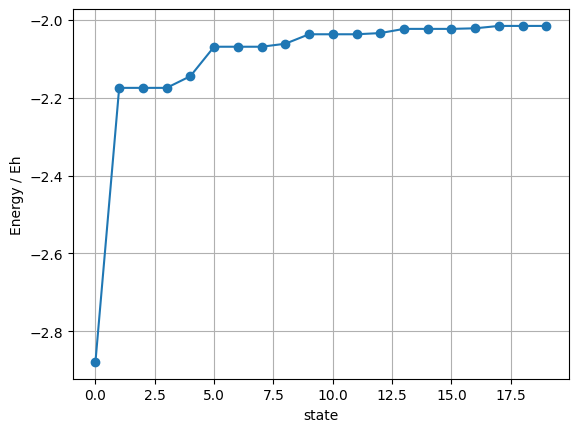

Full-CI für Helium#
Wir betrachten zwei Elektronen mit den Koordinaten \(1\) und \(2\) sowie einen endlichen Satz orthonormaler Spinorbitale \(\chi_p\). Aus jeweils zwei Spinorbitalen \(\chi_i\) und \(\chi_j\) konstruieren wir einen antisymmetrisierten Zweielektronenzustand
der die Fermionnatur der Elektronen durch explizite Antisymmetrie erfüllt. Diese Zustände bilden für alle zulässigen Indexpaare \((i,j)\) eine Basis des antisymmetrischen Zweielektronenraums (sofern die zugrunde liegenden Spinorbitale vollständig sind).
Wird nun ein endlicher Einteilchen-Basisatz \(\{\chi_p\}\) gewählt, so erhält man eine endliche Menge solcher antisymmetrisierten Zweielelektronenzustände. Jeder beliebige Zweielektronenzustand \(\Psi\) kann dann innerhalb dieses Basisraums exakt als Linearkombination dieser Konfigurationen dargestellt werden:
wobei die Koeffizienten \(c_{ij}\) die Beiträge der jeweiligen Konfigurationen zur Gesamtwellenfunktion beschreiben. Diese Darstellung entspricht einer vollständigen Konfigurationswechselwirkungsentwicklung (Configuration Interaction, CI) im gewählten Einteilchenraum.
Die unbekannten Koeffizienten \(c_{ij}\) werden über das Variationsprinzip bestimmt. Dazu fordert man wie schon oft verwendet, dass der Erwartungswert der Energie
stationär bezüglich Variationen der Koeffizienten \(c_{ij}\) ist. Dies führt auf ein lineares Eigenwertproblem für die CI-Koeffizienten. Setzt man die CI-Entwicklung für \(\Psi\) ein und variiert unabhängig nach allen \(c_{ij}^*\), so erhält man das Full-CI-Eigenwertproblem
In Matrixform lässt sich dies als
schreiben, wobei die Matrixelemente der CI-Hamiltonmatrix durch
gegeben sind. Die Diagonalisierung dieser Matrix liefert die exakten Eigenenergien und Eigenzustände des Zweielelektronenproblems innerhalb des gewählten Einteilchen-Basisraums!
Die benötigten Matrixelemente#
Um die Full-CI Rechnung an Helium durchzuführen, berechnen wir zunächst die benötigten Matrixelemente explizit. Der elektronische Hamiltonoperator des He-Atoms sei
wobei \(h(a)\) der Einelektronenoperator ist, der nur auf Elektron \(a\) wirkt (kinetische Energie plus Coulomb-Potential des Kerns), und \(r_{12}=|\mathbf r_1-\mathbf r_2|\).
Wir wollen nun das Matrixelement
explizit ausrechnen. Zunächst schreiben wir bra und ket in der Produktdarstellung aus:
Damit folgt für jedes Operatorstück \(O\) (gleichgültig ob \(O=h(1)\), \(O=h(2)\) oder \(O=1/r_{12}\)):
Als Nächstes nutzen wir zwei Eigenschaften der Einteilchen-Basiszustände:
(1) Orthonormalität der Spinorbitale \(\chi_p\):
(2) Wirkung eines Einelektronenoperators auf Produktzustände. Wir definieren die Einelektronenintegrale
Dann gilt für Produktzustände (hier exemplarisch für \(h(1)\)):
und entsprechend
Beitrag von \(h(1)\). Wir setzen \(O=h(1)\) in die allgemeine Vier-Terme-Entwicklung ein und werten jeden Term mit obiger Faktorregel aus:
Beitrag von \(h(2)\). Analog mit \(O=h(2)\) erhält man:
Dies ist genau derselbe Ausdruck wie beim \(h(1)\)-Beitrag, so dass die Summe aus beiden daher einfach doppelt so groß ist. Somit folgt für den gesamten Einelektronenteil:
Beitrag von \(\frac{1}{r_{12}}\).
Wir betrachten nun den Zweielektronenanteil des Hamiltonoperators. Setzt man die antisymmetrisierten Zweielektronenzustände explizit ein, so ergibt sich
Jeder dieser Terme kann explizit als Doppelintegral über die Elektronenkoordinaten geschrieben werden. Da über beide Koordinaten integriert wird, bleibt der Wert eines solchen Integrals invariant unter der Transformation \(1\leftrightarrow 2\). Es gilt daher
sowie
Setzt man diese Identitäten in den obigen Ausdruck ein, so kürzen sich jeweils zwei Terme paarweise, und es verbleibt
Fasst man den Einelektronen- und den Zweielektronenanteil zusammen, so erhält man für das vollständige Matrixelement des Hamiltonoperators zwischen zwei antisymmetrisierten Zweielektronenzuständen
Implementierung in Python#
import numpy as np
from scipy.linalg import eigh
import matplotlib.pyplot as plt
def Ng(a):
return (2*a/np.pi)**0.75
def Sij(a,b):
return Ng(a)*Ng(b)*(np.pi/(a+b))**1.5
def Tij(a,b):
return Ng(a)*Ng(b)*3*a*b/(a+b)*(np.pi/(a+b))**1.5
def Vij(a,b, Z=2.0):
return Ng(a)*Ng(b)*(-2*Z)*np.pi/(a+b)
def Gijkl(a,b,c,d):
A = a+b
B = c+d
return Ng(a)*Ng(b)*Ng(c)*Ng(d) * 2*np.pi**2.5/(A*B*np.sqrt(A+B))
nbf = 25
amin, amax = 1e-3, 1e3
r = (amax/amin)**(1/(nbf-1))
exps = amin * r**np.arange(nbf)
ndim = len(exps)
# Calculate one-electron integrals
A,B = np.meshgrid(exps,exps,indexing='ij')
S = Sij(A,B)
T = Tij(A,B)
V = Vij(A,B)
h = T + V
# Calculate two-electron integrals
A,B,C,D = np.meshgrid(exps,exps,exps,exps,indexing='ij')
G = Gijkl(A,B,C,D)
s, U = np.linalg.eigh(S)
A = U @ np.diag(1./np.sqrt(s)) @ U.T
s, U = np.linalg.eigh(S)
A = U @ np.diag(s**(-0.5)) @ U.T
h = A @ h @ A
g = np.einsum("ap,bq,cr,ds,abcd->pqrs", A, A, A, A, G, optimize=True)
nsp = A.shape[1]
nso = 2*nsp
h= np.kron(np.eye(2), h)
def so(p):
return p % nsp, p // nsp
def eri_so(p,q,r,s):
ip, sp = so(p); iq, sq = so(q); ir, sr = so(r); is_, ss = so(s)
if sp == sr and sq == ss:
return g[ip, ir, iq, is_] # (pr|qs)_chem = <pq|rs>_phys
return 0.0
def aeri_so(p,q,r,s):
return eri_so(p,q,r,s) - eri_so(p,q,s,r)
def delt(a,b):
return 1.0 if a==b else 0.0
def H2e(i,j,k,l):
return (delt(i,k)*h[j,l]
+ delt(j,l)*h[i,k]
- delt(i,l)*h[j,k]
- delt(j,k)*h[i,l]
+ aeri_so(i,j,k,l))
# determinant list |i j>, i<j
dets = [(i,j) for i in range(nso) for j in range(i+1, nso)]
ndet = len(dets)
H = np.zeros((ndet, ndet))
for A,(i,j) in enumerate(dets):
for Bidx,(k,l) in enumerate(dets[:A+1]):
v = H2e(i,j,k,l)
H[A,Bidx] = v
H[Bidx,A] = v
E, _ = eigh(H)
print(f"FCI E0 = {E[0]:.12f} Eh (nsp={nsp}, ndet={ndet})")
plt.plot(E[:20], marker='o')
plt.xlabel("state")
plt.ylabel("Energy / Eh")
plt.grid(True)
plt.show()
FCI E0 = -2.879005354571 Eh (nsp=25, ndet=1225)

Symmetrische (Löwdin) Orthogonalisierung der Basiszustände#
Aus der oben berechneten Überlappmatrix erkennen wir, dass der verwendete Basissatz nicht orthonormal ist. Die CI-Methode in der hier formulierten Form setzt jedoch orthonormale Einteilchenzustände voraus. Daher ist es notwendig, die Basiszustände zunächst zu orthogonalisieren.
Die Überlappmatrix ist wie folgt
definiert. Die Matrix \(\mathbf S\) ist hermitesch und positiv definit. Ziel der Orthogonalisierung ist es, aus den \(\lvert \phi_\mu\rangle\) einen neuen Satz orthonormaler Zustände \(\{\lvert \chi_\mu\rangle\}\) zu konstruieren, der denselben Unterraum aufspannt.
Wir suchen die neuen Zustände als Linearkombination der alten:
wobei die Koeffizientenmatrix \(\mathbf A\) so zu bestimmen ist, dass die Orthonormalitätsbedingung
erfüllt ist. Setzt man die Linearkombination ein, so erhält man
Die Orthonormalitätsforderung ist daher äquivalent zu
Da \(\mathbf S\) hermitesch und positiv definit ist, besitzt sie eine Spektraldarstellung
wobei \(\mathbf U\) unitär ist und \(\mathbf s\) eine Diagonalmatrix mit strikt positiven Eigenwerten \(s_i>0\). Damit ist auch jede reelle Potenz von \(\mathbf S\) wohldefiniert; insbesondere definieren wir
mit \((\mathbf s^{-1/2})_{ii}=s_i^{-1/2}\).
Wählt man nun
so folgt unmittelbar
Die so konstruierten Zustände $\( \boxed{ \lvert \chi_\mu\rangle=\sum_\nu \lvert \phi_\nu\rangle\,(S^{-1/2})_{\nu\mu} } \)$ sind also orthonormal. Dieses Verfahren wird als symmetrische Orthogonalisierung nach Löwdin bezeichnet und wird oft in der Quantenchemie verwendet.
In kompakter Operatorform lässt sich die Löwdin-Orthogonalisierung auch als Transformation des Basisvektors \(\boldsymbol{\phi}\) schreiben:
# Initial guess (starting orbital)
c = np.ones(ndim)
c /= np.sqrt(c.T @ S @ c)
#SCF loop
Energy_list = []
c_list = []
max_iter = 20
for it in range(max_iter):
J = np.einsum("mnls,l,s->mn", G, c, c)
F = h + J
epsilon, Cmat = eigh(F, S)
c_new = Cmat[:, epsilon.argmin()]
c_new /= np.sqrt(c_new.T @ S @ c_new)
# total Hartree energy
E = 2*(c_new.T @ h @ c_new) + (c_new.T @ J @ c_new)
Energy_list.append(E)
print(f"SCF-Iteration {it:2d} E = {E:.10f}")
c_list.append(c_new.copy())
if np.linalg.norm(c_new - c) < 1e-6:
break
c = c_new
# Plot convergence
plt.plot(Energy_list, marker='o', color = "red")
plt.xlabel("Iteration")
plt.ylabel(f"Energy/$E_h$")
plt.grid(True)
plt.show()